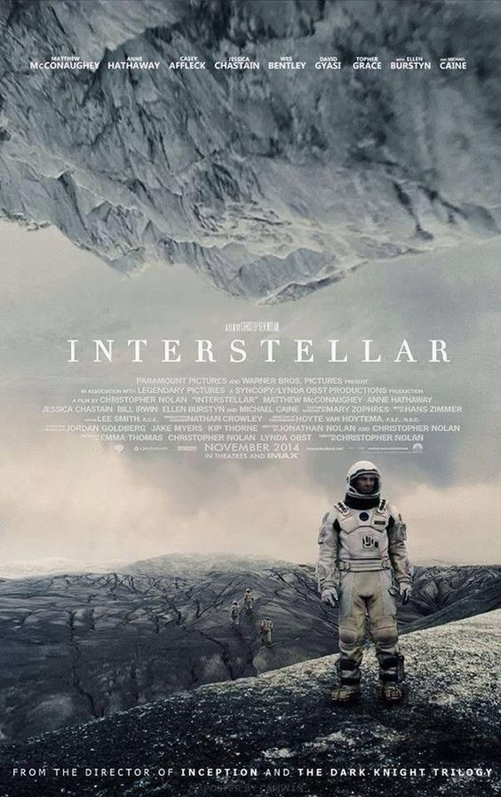
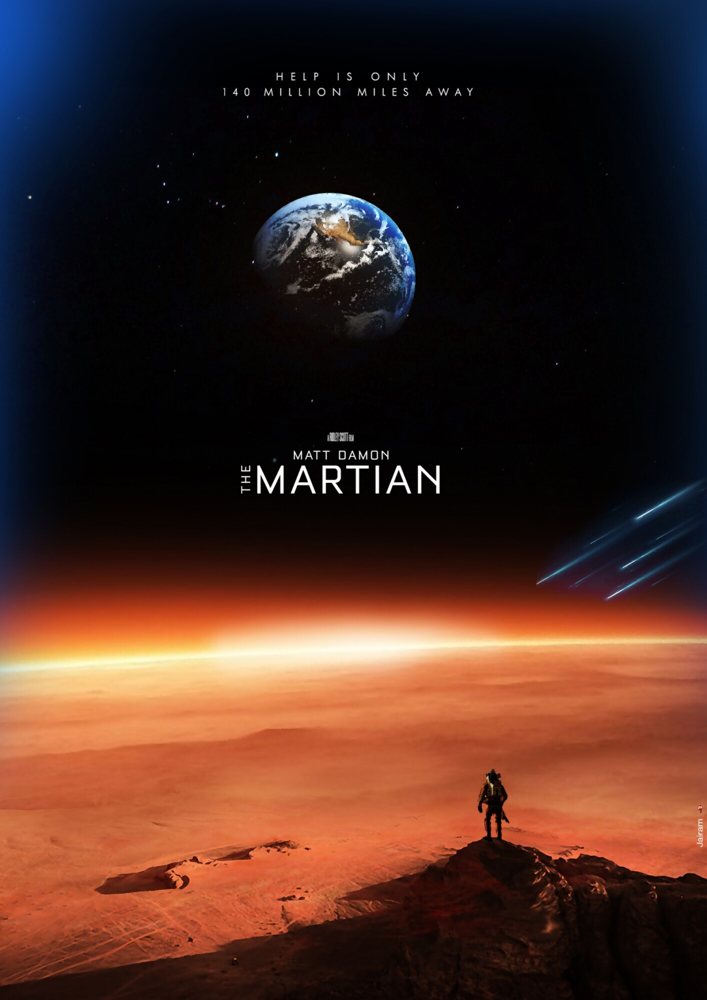
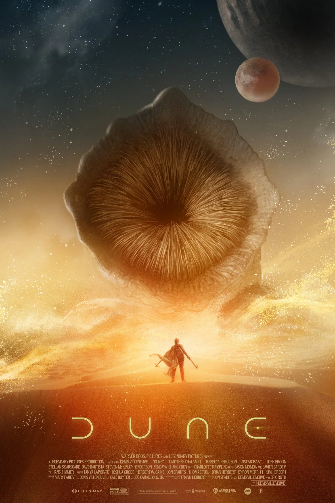
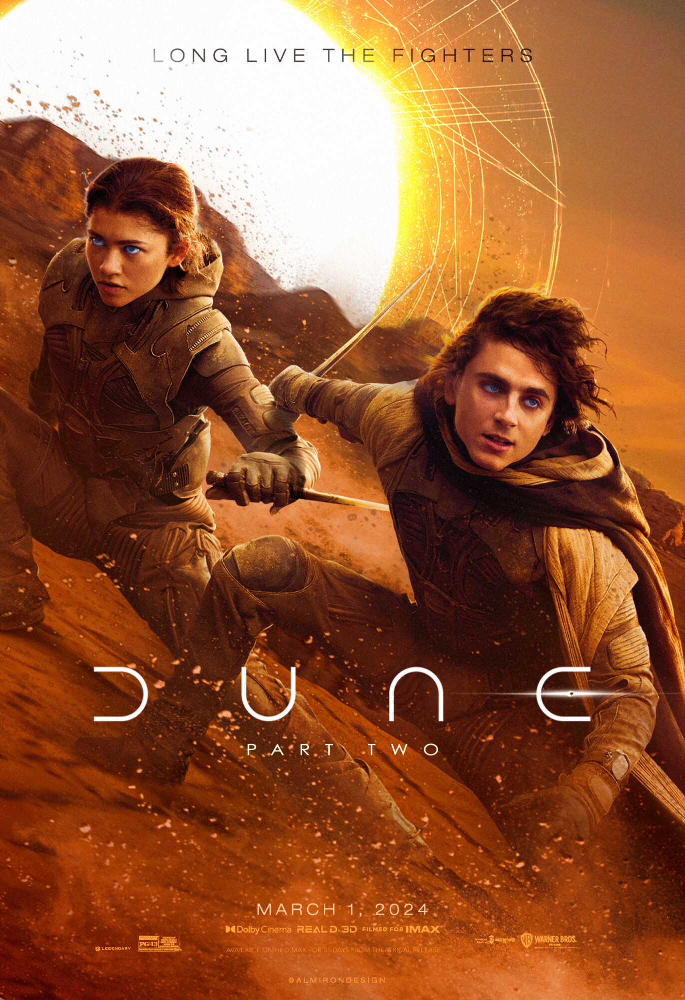

Interstellar

In a near-future Earth struggling with environmental collapse and famine, former NASA pilot Joseph Cooper is recruited for a daring interstellar mission. Tasked with finding a new habitable planet for humanity, he travels through a newly discovered wormhole with a small crew, venturing into the unknown depths of space and time — while his young daughter Murph waits for his return back home.
- Matthew McConaughey as Cooper
- Anne Hathaway as Amelia Brand
- Jessica Chastain as Murph
- Michael Caine as Professor John Brand
- Mackenzie Foy as Young Murph
- Bill Irwin as TARS (voice)
- Timothée Chalamet as Young Cooper
- Casey Affleck as Tom Cooper
- David Gyasi as Romilly
- Matt Damon as Dr. Mann
The Martian

When a fierce dust storm forces the Ares III crew to abort their mission on Mars, astronaut Mark Watney is struck by debris and presumed dead. Left behind alone on the hostile planet with limited supplies, Watney must use his ingenuity, botany skills, and humor to survive long enough for a rescue mission — while NASA races against time to bring him home.
- Matt Damon as Mark Watney
- Jessica Chastain as Melissa Lewis
- Jeff Daniels as Teddy Sanders
- Kristen Wiig as Annie Montrose
- Michael Peña as Rick Martinez
- Kate Mara as Beth Johanssen
- Sean Bean as Mitch Henderson
- Chiwetel Ejiofor as Vincent Kapoor
- Sebastian Stan as Chris Beck
- Donald Glover as Rich Purnell
Dune (2021)

In the distant future, young Paul Atreides joins his noble family as they take stewardship of the dangerous desert planet Arrakis. As political intrigue, betrayal, and war erupt, Paul must navigate his destiny among the Fremen people while facing deadly threats and awakening his extraordinary powers.
- Timothée Chalamet as Paul Atreides
- Rebecca Ferguson as Lady Jessica
- Oscar Isaac as Duke Leto Atreides
- Josh Brolin as Gurney Halleck
- Zendaya as Chani
- Jason Momoa as Duncan Idaho
- Javier Bardem as Stilgar
- Stellan Skarsgård as Baron Vladimir Harkonnen
- Dave Bautista as Beast Rabban
Dune: Part Two (2024)

Following the destruction of House Atreides, Paul Atreides unites with Chani and the Fremen people on Arrakis. Seeking revenge against his enemies, he faces a monumental choice between love and destiny as he leads a galactic rebellion that could change the fate of the universe.
- Timothée Chalamet as Paul Atreides
- Zendaya as Chani
- Rebecca Ferguson as Lady Jessica
- Josh Brolin as Gurney Halleck
- Austin Butler as Feyd-Rautha Harkonnen
- Florence Pugh as Princess Irulan
- Javier Bardem as Stilgar
- Stellan Skarsgård as Baron Vladimir Harkonnen
- Christopher Walken as Emperor Shaddam IV